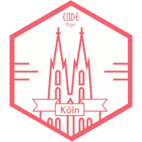
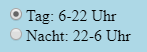
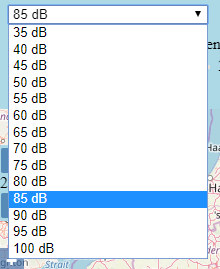
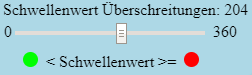
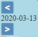
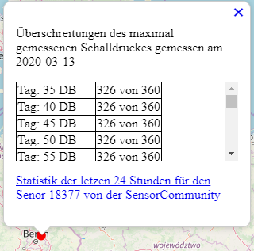
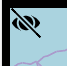

Das CodeforCologne Meetup ist ein zwei wöchentliches Treffen um Anwendungen, freie Daten und Visualisierungen zu erstellen und Wissen auszutauschen.
Um 22 Uhr (MESZ) wird die Sensor Community API ausgelesen und die vorhandenen Sensoren in eine PostGIS Datenbank geschrieben. Die Nacht fängt entsprechend am Vortag um 22 Uhr an, um eine zusammenhängende Aufnahme von Nacht (22-6 Uhr) und Tag (6-22 Uhr) zu gewährleisten. Es werden nur Länder in Europa, für welche die MESZ gilt, berücksichtigt.
Dann wird alle 120 Sekunden die API abgegfragt, ob neue Messungen für den maximal gemessenen Schalldruck (noise_LA_max) vorliegen. Die Sensoren sind so eigestellt, dass ca. alle 144 bis 148 Sekunden die Werte an den Server übermittelt werden. In der Tabelle stehen die Dezibelwerte für die Tages- und Nachtzeiten von 35 dB bis 100 dB in einem Intervall von 5 dB. Wird der Wert der Spalte überschritten, wird die Überschreitung entsprechend hinzuaddiert. So läßt sich recht einfach die Anzahl der Überschreitungen für den gewünschten Schallpegel ablesen.
Ihr könnt die folgenden Anpassungen vornehmen.
Umschalten zwischen den Überschreitungen in der Nacht (22-6 Uhr) und am Tag (6-22 Uhr):
Auswahl des maximal gemessenen Schalldrucks in Dezibel (dB):
Auswahl des Schwellenwertes:
Wurde der Schwellenwert für einen Sensor überschritten, wird dies als roter Kreis dargestellt. Findet keine Überschreitung statt als grüner Kreis.
Beispiel: Wenn Du z.B. wissen möchtest ob der Dezibelwert von 85 dB (z.B. durch Fluglärm) 20 mal überschritten wurde in der Nacht, bitte zunächst den Radiobutton "Nacht: 22-6 Uhr" aktivieren. Dann den dB Wert von 85 in der Dropdown-Liste auswählen. Bei den Überschreitungen mitttels des Schiebereglers 20 einstellen. Alle Sensoren bei denen mindestens 20 mal der Wert von 85 dB gemessen wurde, werden in rot dargestellt, sonst in Grün.
Auswahl des Datums:
Es existieren in der Datenbank Werte ab dem 18.03.2020.
Durch anklicken eines Sensors können die Überschreitungen direkt abgelesen werden. Des weiteren kann über einen externen Link zur Sensor Community die Statistik der letzen 24 Stunden für den Senor angeschaut werden:
Durch ein Anklicken des Augensymbols in der linken oberen Ecke der Bedienwerkzeuge lassen sich diese weg schalten um, auch bei mobilen Endgeräten genug Platz für die Kartendarstellung zu haben:
Die ursprünglichen Daten stammen von der Sensor Community und stehen der unter Database Contents License (DbCL) v1.0.
Hier stehen die abgeleiteten Daten ab dem 11.2.2020 als GeoJson bereit (Stand 22 Uhr MESZ).
Der WMS-T Dienst kann ebenfalls unter den oben aufgeführten Nutzungsbedingungen verwendet werden:
Verantwortlich für diesen Webauftritt ist: Martin Over, c/o OK Lab Köln, Hackländerstraße 2, 50825 Köln, contact(at)OpenDEMData.info
Die Inhalte unserer Seiten wurden mit größter Sorgfalt erstellt. Für die Richtigkeit, Vollständigkeit und Aktualität der Inhalte können wir jedoch keine Gewähr übernehmen. Als Diensteanbieter sind wir gemäß § 7 Abs.1 TMG für eigene Inhalte auf diesen Seiten nach den allgemeinen Gesetzen verantwortlich. Nach § 8 bis 10 TMG sind wir als Diensteanbieter jedoch nicht verpflichtet, übermittelte oder gespeicherte fremde Informationen zu überwachen oder nach Umständen zu forschen, die auf eine rechtswidrige Tätigkeit hinweisen. Verpflichtungen zur Entfernung oder Sperrung der Nutzung von Informationen nach den allgemeinen Gesetzen bleiben hiervon unberührt. Eine diesbezügliche Haftung ist jedoch erst ab dem Zeitpunkt der Kenntnis einer konkreten Rechtsverletzung möglich. Bei Bekanntwerden von entsprechenden Rechtsverletzungen werden wir diese Inhalte umgehend entfernen.
Unser Angebot enthält Links zu externen Webseiten Dritter, auf deren Inhalte wir keinen Einfluss haben. Deshalb können wir für diese fremden Inhalte auch keine Gewähr übernehmen. Für die Inhalte der verlinkten Seiten ist stets der jeweilige Anbieter oder Betreiber der Seiten verantwortlich. Die verlinkten Seiten wurden zum Zeitpunkt der Verlinkung auf mögliche Rechtsverstöße überprüft. Rechtswidrige Inhalte waren zum Zeitpunkt der Verlinkung nicht erkennbar. Eine permanente inhaltliche Kontrolle der verlinkten Seiten ist jedoch ohne konkrete Anhaltspunkte
Bei jedem Zugriff auf Inhalte des Internetangebotes werden dort vorübergehend Daten über sogenannte Protokoll- oder Log-Dateien gespeichert, die möglicherweise eine Identifizierung zulassen. Die folgenden Daten werden hierbei erhoben:
Rechtsgrundlage für die vorübergehende Speicherung der Daten ist Art. 6 Abs. 1 lit. e DS-GVO i.V.m. § 3 Abs. 1 NRWDSAnpUG-EU.
Die Daten aus den Protokoll- bzw. Logdateien dienen zur Sicherstellung der Funktionsfähigkeit der Website. Zudem dienen sie zur Abwehr und Analyse von Angriffen. In diesen Zwecken liegt auch unser berechtigtes Interesse an der Datenverarbeitung.
Die Daten werden bis zu einer Woche direkt und ausschließlich für Administratoren zugänglich aufbewahrt. Mit dem Hoster des Serverswurde ein entsprechender Vertrag zur Auftragsverarbeitung (AVV) geschlossen. Es handelt sich um einen deutschen Serverstandort
Die hier gezeigten Hintergrundkarten kommen von:
www.openstreetmap.orgDas Augen Icon für die Werkzeuge wurde erstellt von:
SVG Repo - Creative Commons BY 4.0 Code on GitHub
Code on GitHub